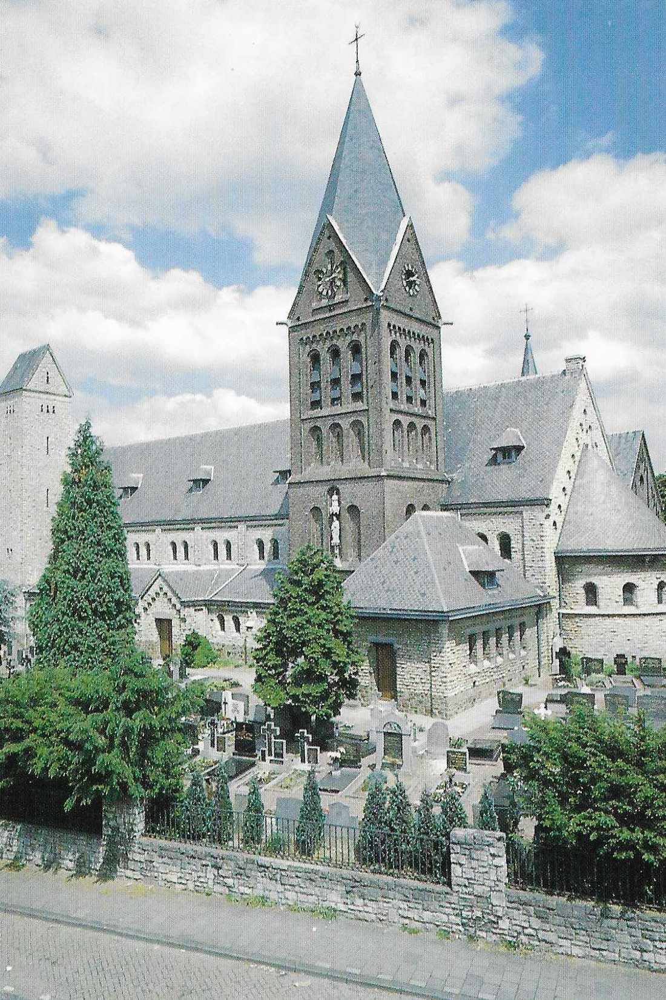
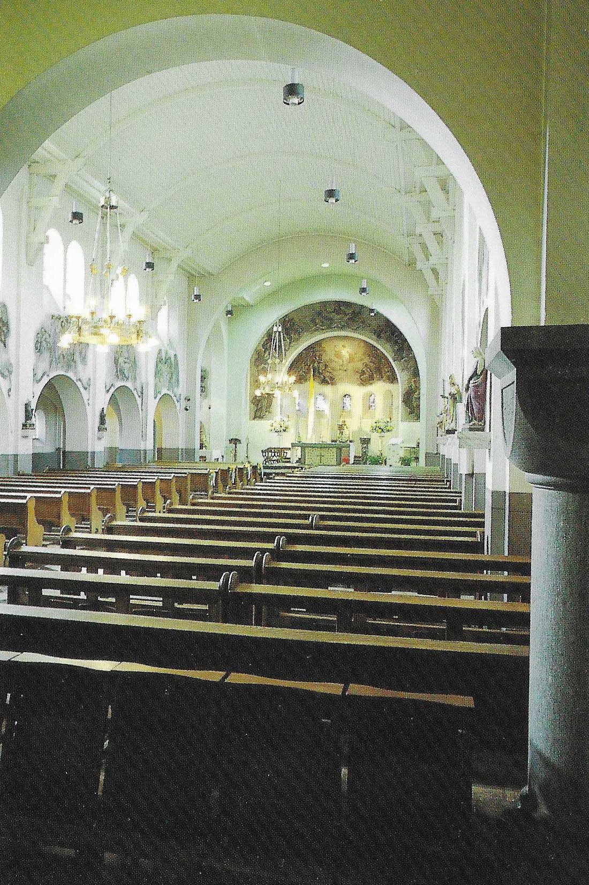
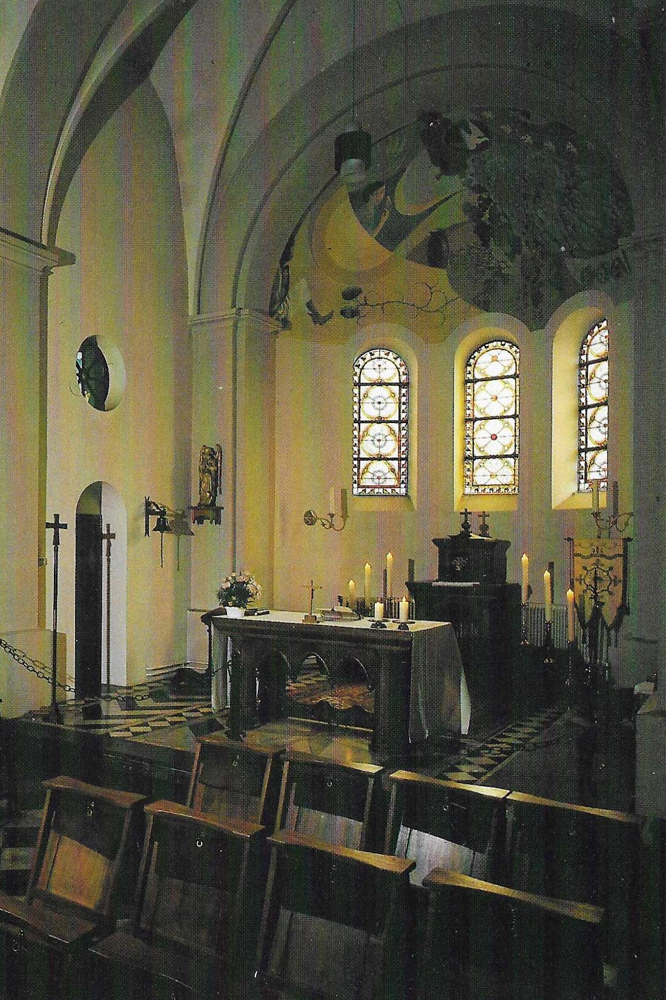

|
Sint Martinusparochie |
|
|
Sint Martinusparochie |
| 
Het exterireur van de Martinuskerk in Welten |

Het interieur van de Martinuskerk in Welten |

Het interieur van de kapel van de Martinuskerk in Welten |